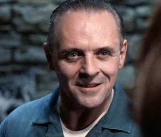
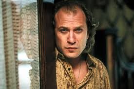
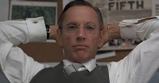

Clarice Starling est une jeune stagiaire du FBI, intelligente et déterminée.
Malgré son manque d’expérience, elle fait preuve d’un sang-froid impressionnant et d’une grande empathie, ce qui lui permet de comprendre les criminels qu’elle étudie.
Son passé difficile la rend plus humaine et plus forte, et c’est ce qui fait d’elle un personnage central et marquant.

Hannibal Lecter
Interprété par: Anthony Hopkins
Hannibal Lecter est un ancien psychiatre brillant, mais aussi un tueur en série extrêmement dangereux. Très cultivé, manipulateur et calme, il analyse les gens avec une précision glaçante.
Même enfermé, il garde un immense pouvoir psychologique sur les autres, notamment sur Clarice, avec qui il entretient une relation complexe mêlant aide et manipulation.

Buffalo Bill
Interprété par: Ted Levine
Buffalo Bill est le principal antagoniste du film. C’est un tueur en série instable et dérangé, obsédé par l’idée de se transformer. Il enlève des femmes et les assassine pour accomplir son projet morbide.
Son personnage représente la violence brute et le chaos, en contraste total avec le calme glaçant d’Hannibal Lecter.

Jack Crawford
Interprété par: Scott Glenn
Jack Crawford est le chef de l’unité des sciences du comportement du FBI. Sérieux et expérimenté, il dirige l’enquête sur Buffalo Bill avec une forte pression sur les épaules.
Prêt à prendre des risques pour arrêter le tueur, il utilise les compétences de Clarice et l’intelligence d’Hannibal pour faire avancer l’enquête, parfois au détriment de l’aspect humain.